Как разложить на множители квадратный трёхчлен
Квадратный трёхчлен — это многочлен вида ax2 + bx + c.
В прошлых уроках мы решали квадратные уравнения. Общий вид таких уравнений выглядел так:
ax2 + bx + c = 0
Левая часть этого уравнения является квадратным трёхчленом.
Одним из полезных преобразований при решении задач является разложение квадратного трёхчлена на множители. Для этого исходный квадратный трёхчлен приравнивают к нулю и решают квадратное уравнение. В этом случае говорят, что выполняется поиск корней квадратного трёхчлена.
Полученные корни x1 и x2 следует подстáвить в следующее выражение, которое и станет разложением:
a(x − x1)(x − x2)
Таким образом, чтобы разложить квадратный трёхчлен на множители при помощи решения квадратного уравнения, нужно воспользоваться следующей готовой формулой:
ax2 + bx + c = a(x − x1)(x − x2)
Где левая часть — исходный квадратный трёхчлен.
Пример 1. Разложить на множители следующий квадратный трёхчлен:
x2 − 8x + 12
Найдём корни квадратного трёхчлена. Для этого приравняем данный квадратный трёхчлен к нулю и решим квадратное уравнение:
x2 − 8x + 12 = 0
В данном случае коэффициент b является чётным. Поэтому можно воспользоваться формулами для чётного второго коэффициента. Чтобы сэкономить время, некоторые подробные вычисления можно пропустить:
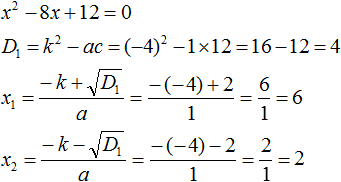
Итак, x1 = 6, x2 = 2. Теперь воспользуемся формулой:
ax2 + bx + c = a(x − x1)(x − x2)
В левой части вместо выражения ax2 + bx + c напишем свой квадратный трёхчлен x2 − 8x + 12. А в правой части подставим имеющиеся у нас значения. В данном случае a = 1, x1 = 6, x2 = 2
x2 − 8x + 12 = 1(x − 6)(x − 2) = (x − 6)(x − 2)
Если a равно единице (как в данном примере), то решение можно записать покороче:
x2 − 8x + 12 = (x − 6)(x − 2)
Чтобы проверить правильно ли разложен квадратный трёхчлен на множители, нужно раскрыть скобки у правой части получившегося равенства.
Раскроем скобки у правой части равенства, то есть в выражении (x − 6)(x − 2). Если мы всё сделали правильно, то должен получиться квадратный трёхчлен x2 − 8x + 12
(x − 6)(x − 2) = x2 − 6x − 2x + 12 = x2 − 8x + 12
Пример 2. Разложить на множители следующий квадратный трёхчлен:
2x2 − 14x + 24
Приравняем данный квадратный трёхчлен к нулю и решим уравнение:
2x2 − 14x + 24 = 0
Как и в прошлом примере коэффициент b является чётным. Поэтому можно воспользоваться формулами для чётного второго коэффициента:
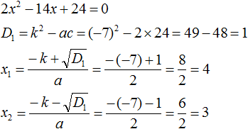
Итак, x1 = 4, x2 = 3. Приравняем квадратный трехчлен 2x2 − 14x + 24 к выражению a(x − x1)(x − x2), где вместо переменных a, x1 и x2 подстáвим соответствующие значения. В данном случае a = 2
2x2 − 14x + 24 = 2(x − 4)(x − 3)
Выполним проверку. Для этого раскроем скобки у правой части получившегося равенства. Если мы всё сделали правильно, то должен получиться квадратный трёхчлен 2x2 − 14x + 24
2(x − 4)(x − 3) = 2(x2 − 4x −3x + 12) = 2(x2 − 7x + 12) = 2x2 − 14x + 24
Как это работает
Разложение квадратного трёхчлена на множители происходит, если вместо коэффициентов квадратного трёхчлена подстáвить теорему Виета и выполнить тождественные преобразования.
Для начала рассмотрим случай, когда коэффициент a квадратного трёхчлена равен единице:
x2 + bx + c
Вспоминаем, что если квадратное уравнение является приведённым, то теорема Виета имеет вид:
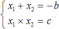
Тогда приведённый квадратный трехчлен x2 + bx + c можно разложить на множители следующим образом. Сначала выразим b из уравнения x1 + x2 = −b. Для этого можно умножить обе его части на −1
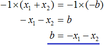
Переменную c из теоремы Виета выражать не нужно — она уже выражена. Достаточно поменять местами левую и правую часть:
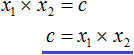
Теперь подставим выраженные переменные b и c в квадратный трёхчлен x2 + bx + c
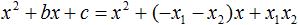
Раскроем скобки там где это можно:
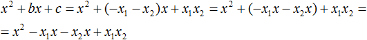
В получившемся выражении выполним разложение многочлена на множители способом группировки. В данном случае удобно сгруппировать первый член со вторым, а третий с четвёртым:
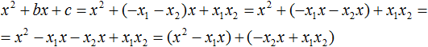
Из первых скобок вынесем общий множитель x, из вторых скобок — общий множитель −x2
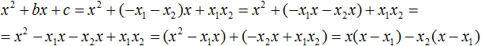
Далее замечаем, что выражение (x − x1) является общим множителем. Вынесем его за скобки:
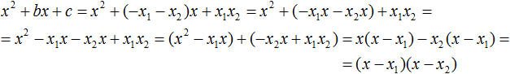
Мы пришли к тому, что выражение x2 + bx + c стало равно (x − x1)(x − x2)
x2 + bx + c = (x − x1)(x − x2)
Но это был случай, когда исходный квадратный трёхчлен является приведённым. В нём коэффициент a равен единице. И соответственно, в формуле разложения такого квадратного трехчлена коэффициент a можно опустить.
Теперь рассмотрим случай, когда коэффициент a квадратного трёхчлена не равен единице. Это как раз тот случай, когда в формуле разложения присутствует перед скобками коэффициент a
ax2 + bx + c = a(x − x1)(x − x2)
Вспоминаем, что если квадратное уравнение не является приведённым, то есть имеет вид ax2 + bx + c = 0, то теорема Виета принимает следующий вид:
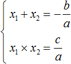
Это потому что теорема Виета работает только для приведённых квадратных уравнений. А чтобы уравнение ax2 + bx + c = 0 стало приведённым, нужно разделить обе его части на a
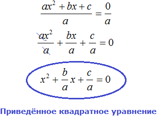
Далее чтобы квадратный трёхчлен вида ax2 + bx + c разложить на множители, нужно вместо b и c подставить соответствующие выражения из теоремы Виета. Но в этот раз нам следует использовать равенства
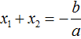
и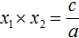
Для начала выразим b и c. В первом равенстве умножим обе части на a. Затем обе части получившегося равенства умножим на −1
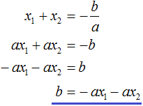
Теперь из второго равенства выразим c. Для этого умножим обе его части на a
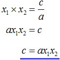
Теперь подставим выраженные переменные b и с в квадратный трёхчлен ax2 + bx + c. Для наглядности каждое преобразование будем выполнять на новой строчке:
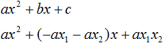
Здесь вместо переменных b и c были подставлены выражения −ax1 − ax2 и ax1x2, которые мы ранее выразили из теоремы Виета. Теперь раскроем скобки там где это можно:
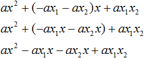
В получившемся выражении выполним разложение многочлена на множители способом группировки. В данном случае удобно сгруппировать первый член со вторым, а третий с четвёртым:
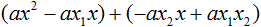
Теперь из первых скобок вынесем общий множитель ax, а из вторых — общий множитель −ax2
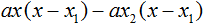
Далее замечаем, что выражение x − x1 тоже является общим множителем. Вынесем его за скобки:
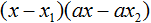
Вторые скобки содержат общий множитель a. Вынесем его за скобки. Его можно расположить в самом начале выражения:
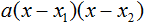
Мы пришли к тому, что выражение ax2 + bx + c стало равно a(x − x1)(x − x2)
ax2 + bx + c = a(x − x1)(x − x2)
Отметим, что если квадратный трехчлен не имеет корней, то его нельзя разложить на множители. Действительно, если не найдены корни квадратного трёхчлена, то нéчего будет подставлять в выражение a(x − x1)(x − x2) вместо переменных x1 и x2.
Примеры разложений
Пример 1. Разложить на множители следующий квадратный трёхчлен:
3x2 − 2x − 1
Найдём корни квадратного трёхчлена:
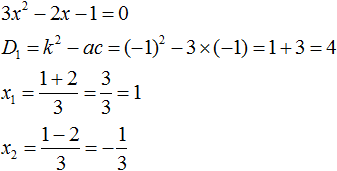
Воспользуемся формулой разложения. В левой части напишем квадратный трёхчлен 3x2 − 2x − 1, а в правой части — его разложение в виде a(x − x1)(x − x2), где вместо a, x1 и x2 подстáвим соответствующие значения:
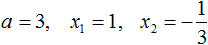
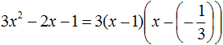
Во вторых скобках можно заменить вычитание сложением:
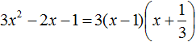
Пример 2. Разложить на множители следующий квадратный трёхчлен:
3 − 11x + 6x2
Упорядочим члены так, чтобы старший коэффициент располагался первым, средний — вторым, свободный член — третьим:
6x2 − 11x + 3
Найдём корни квадратного трёхчлена:
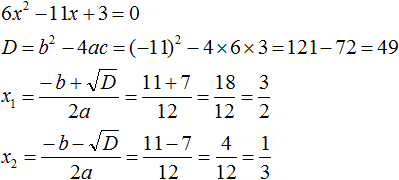
Воспользуемся формулой разложения:
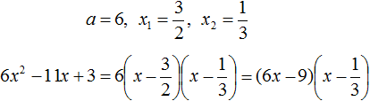
Упростим получившееся разложение. Вынесем за первые скобки общий множитель 3
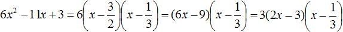
Теперь воспользуемся сочетательным законом умножения. Напомним, что он позволяет перемножать сомножители в любом порядке. Умножим 3 на вторые скобки. Это позвóлит избавиться от дроби в этих скобках:
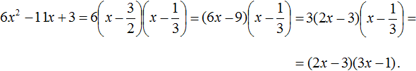
Пример 3. Разложить на множители следующий квадратный трёхчлен:
3x2 + 7x − 6
Найдём корни квадратного трёхчлена:
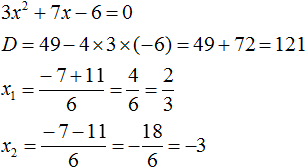
Воспользуемся формулой разложения:
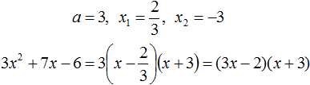
Пример 4. Найдите значение k, при котором разложение на множители трёхчлена 3x2 − 8x + k содержит множитель (x − 2)
Если разложение содержит множитель (x − 2), то один из корней квадратного трёхчлена равен 2. Пусть корень 2 это значение переменной x1
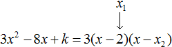
Чтобы найти значение k, нужно знать чему равен второй корень. Для его определения воспользуемся теоремой Виета.
В данном случае квадратный трёхчлен не является приведённым, поэтому сумма его корней будет равна дроби
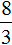
, а произведение корней — дроби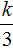
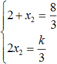
Выразим из первого равенства переменную x2 и сразу подстáвим найденное значение во второе равенство вместо x2
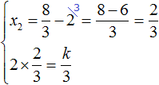
Теперь из второго равенства выразим k. Так мы найдём его значение.
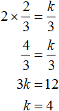
Пример 5. Разложить на множители следующий квадратный трёхчлен:
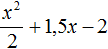
Перепишем данный трёхчлен в удобный для нас вид. Если в первом члене заменить деление умножением, то получим
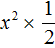
. Если поменять местами сомножители, то получится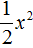
. То есть коэффициент a станет равнымКоэффициент b можно перевести в обыкновенную дробь. Так проще будет искать дискриминант:
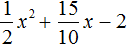
Найдём корни квадратного трёхчлена:
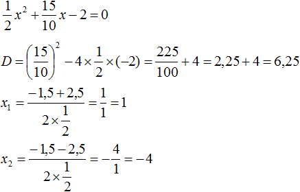
Воспользуемся формулой разложения:
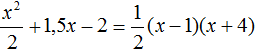
Когда корень только один
Если квадратный трёхчлен имеет только один корень, то формула разложения квадратного трёхчлена примет такой вид:
ax2 + bx + c = a(x − x1)2
Вместо x1 подставляется единственный найденный корень квадратного трёхчлена.
Например, квадратный трёхчлен x2 − 6x + 9 имеет только один корень. Дискриминант этого квадратного трёхчлена равен нулю:
D = b2 − 4ac = (−6)2 − 4 × 1 × 9 = 36 − 36 = 0
и далее вычисляется единственный корень по известной формуле:
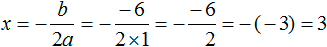
Тогда по формуле, которая приведена выше, получим:
ax2 + bx + c = a(x − x1)2
x2 − 6x + 9 = (x − 3)2
Внимательные наверное сразу поняли почему происходит именно так. Если дискриминант квадратного трёхчлена равен нулю, то корень вычисляется по формуле:
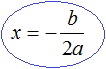
Но никто не запрещает нам использовать формулы вычисления корней квадратного трёхчлена:
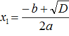
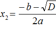
Просто в этом случае мы получим один и тот же корень 3
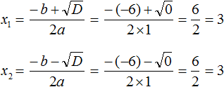
Видим, что x1 = x2. Теперь для квадратного трёхчлена x2 − 6x + 9 применим нашу формулу разложения, которую мы применяем когда два корня:
x2 − 6x + 9 = (x − 3)(x − 3)
Выражение (x − 3)(x − 3) это перемножение двух сомножителей, каждый из которых равен (x − 3). Это выражение можно заменить на выражение (x − 3)2
x2 − 6x + 9 = (x − 3)2